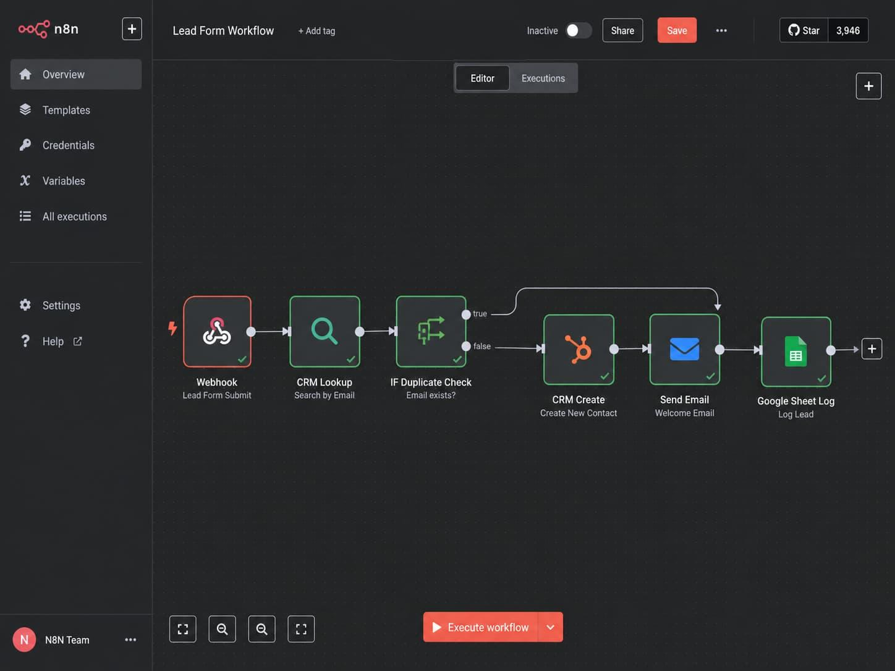

Smoking Chef · نمای محصول
نمای نزدیک برای یک کمپین غذایی.
گردشکارهای n8n و هوش مصنوعی، وبسایتهای اختصاصی و فیلمهای تبلیغاتی سینمایی را با نگاهی انسانی طراحی میکنم.
پیشنمایش با نشانگر بیصدا پخش میشود؛ با انتخاب ویدئو، صدای اصلی را بشنوید.
نمای نزدیک برای یک کمپین غذایی.
روایت تصویری با محوریت محصول.
لحظهای روشن و آهسته از نمایش محصول.
صحنهای پرانرژی با سبک بصری مشخص.
مطالعهای فضاساز با محوریت شخصیت.
معرفی کوتاه استودیو رو به دوربین.
لحظهای سینمایی برای یک کمپین.
مطالعهٔ کوتاه تصویری با کمک هوش مصنوعی.
طراحی برای شفافیت، اجرا با دقت.
گردشکارهای پیوسته برای عملیات پروژه، پشتیبانی صندوق ورودی، گزارش روزانه و برنامهریزی مأموریت. ویدئوهای صفحه و تصویرهای گردشکار در همین بخش قرار دارند.
هدف را به یک مأموریت تبدیل میکند، طرحی کوچک برای وظایف میسازد، وضعیت مأموریت و کارها را نگه میدارد و وضعیت را از راه پایانههای گردشکار نمایش میدهد.
۲۸ گرهپروندههای پروژه را ایجاد و جستوجو میکند، تغییر وضعیت را بررسی میکند، مدارک پرداخت را میسنجد و هنگام تغییر رویدادها گردشکارهای اعلان را اجرا میکند.
۲۵ گرهبا کمک هوش مصنوعی ایمیلها را خلاصه میکند، فرمانهای تلگرام را هدایت میکند و دستیار را به Gmail و عملیات CRM پیوند میدهد.
۲۲ گرهپروندههای پروژه، وظایف مأموریت و ایمیلهای تازه را گردآوری میکند، گزارش روزانهٔ فارسی میسازد و آن را در تلگرام میفرستد.
۱۱ گره

طراحی، مهندسی و تولید ویدئوی سینمایی با هوش مصنوعی، در یک استودیوی خلاق مستقل.
وبسایتهای واکنشگرا و سریع با مسیرهای روشن برای اقدام.
تیزرهای سینمایی، تبلیغات و روایت تصویری برای رسانههای دیجیتال.
مسیرهای کاربری روان، سیستم طراحی و رابطهای دیجیتال امروزی.
ریتم، رنگ، صدا و پستولید سنجیده برای خروجی نهایی یکدست.
سامانهٔ برند متمایز، تایپوگرافی و راهنمای بصری هماهنگ.
پرامپتها و گردشکارهای مدل، متناسب با زبان بصری هر برند.
گزیدهای از ارائهٔ برند SESEMI: دو حوزهٔ تخصصی، شش خدمت، فرایندی با هدایت انسان و کاری اختصاصی برای هر برند.
مسیر روشن از گفتوگوی نخست تا راهاندازی و تحویل نهایی.
مخاطب، نیازها، محدودیتها و تعریف موفقیت را روشن میکنیم.
اطلاعات مفید را به دامنه، ساختار و جهت خلاقانهٔ روشن تبدیل میکنیم.
کار را قابل مشاهده میکنیم، پیشرفت را به اشتراک میگذاریم و با بازبینی انسانی اصلاح میکنیم.
فایلهای نهایی، سامانههای آماده و راهنمای سادهٔ گام بعد را تحویل میدهیم.
من مرصاد جاویدی، بنیانگذار SESEMI هستم. در طراحی گردشکارهای n8n، اتصال هوش مصنوعی و API، تجربههای دیجیتال و محتوای تبلیغاتی با کمک هوش مصنوعی فعالیت میکنم.
هدف و چیزهایی را که آماده دارید بفرستید؛ با هم نخستین گام عملی را مشخص میکنیم.